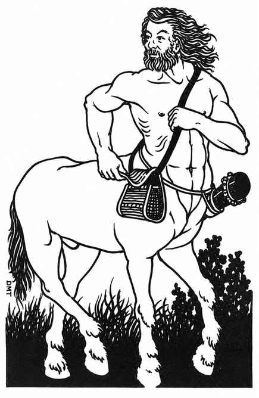

半人马 · Centaur
 |
|
半人马居住在远离人类聚居地的隐蔽牧场。游荡的半人马群总是携带武器，首领还会带盾。半数半人马会装备橡木棍棒（效果相当于晨星；每次攻击对不同体型的目标造成 1–8 或 1–6 点伤害）；四分之一携带复合长弓和 10–30 支箭（射程 24 寸，每次攻击造成 1–6 点伤害）；其余四分之一是首领（护甲等级 4），持盾与长枪（每次攻击造成 1–8 或 2–24 点伤害）。首领的财宝加倍。近战中，每只半人马攻击两次：先用武器攻击，再像马一样用两只前蹄攻击。
若在巢穴中遇到半人马，那里会是一处隐蔽山谷，水草丰美。巢穴中另有 1–6 名成年雄性；雌性的数量是雄性的两倍；幼崽则有 5–30 只。雌性半人马（3 个生命骰）与幼崽（1–3 个生命骰）不使用武器，只有在生死关头才会用蹄子战斗。若雌性与幼崽受到威胁，半人马有 90% 的概率以主要财宝赎回她们。半人马会说自己的语言，以及与其阵营相应的语言。
半人马通常不喜欢人类与矮人；它们容忍侏儒和半身人；对精灵友善，尤其喜爱木精灵。